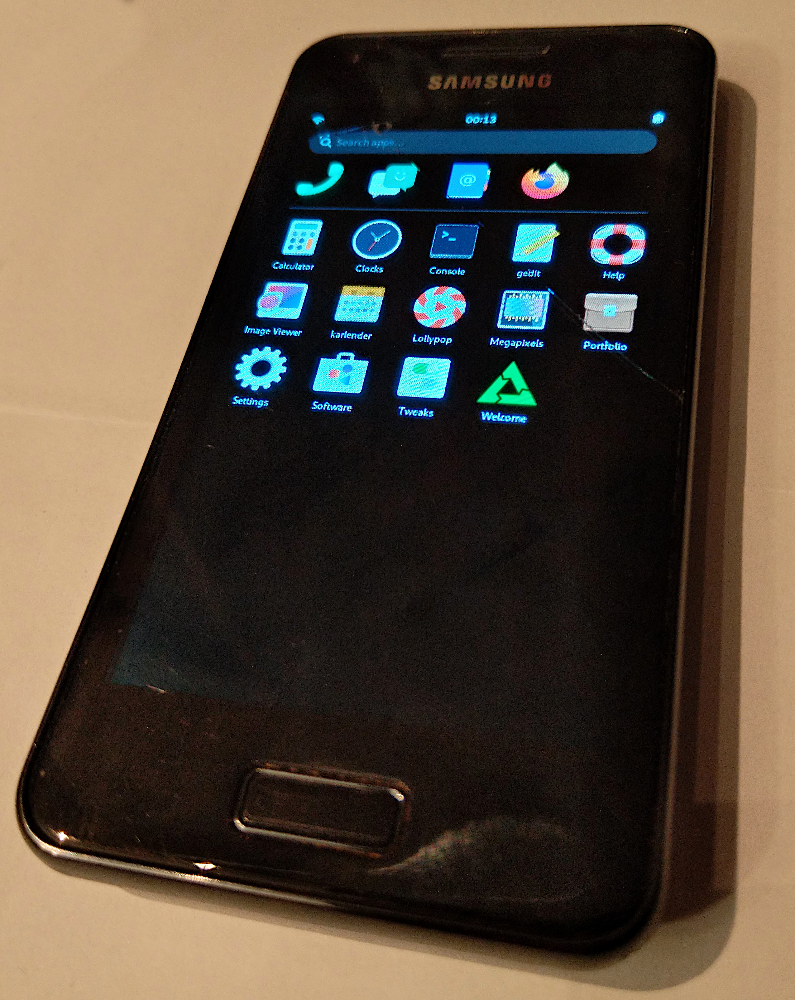

Samsung Galaxy S Advance (samsung-janice)
|
 Samsung Galaxy S Advance GT-I9070 running Phosh under PostmarketOS | |
| Manufacturer | Samsung |
|---|---|
| Name | Galaxy S Advance GT-I9070 |
| Codename | samsung-janice |
| Released | 2012 |
| Category | testing |
| Original software | Android 2.3.6 on Linux 2.6.35 |
| Hardware | |
| Chipset | ST-Ericsson NovaThor U8500 |
| CPU | Dual-core 1.0 GHz Cortex-A9 |
| GPU | Mali-400 |
| Display | 480x800 AMOLED |
| Storage | 8/16 GB |
| Memory | 768 MB |
| Architecture | armv7 |
{kind=link}
| USB Networking |
Works
|
|---|---|
| Flashing |
Works
|
| Touchscreen |
Works
|
| Display |
Works
|
| WiFi |
Works
|
| FDE | |
| Mainline |
Works
|
| Battery |
Works
|
| 3D Acceleration |
Works
|
| Audio |
Broken
|
| Bluetooth |
Partial
|
| Camera |
Broken
|
| GPS |
Broken
|
| Mobile data |
Broken
|
| SMS |
Broken
|
| Calls |
Broken
|
| USB OTG | |
| NFC |
Works
|
| Accelerometer |
Works
|
|---|---|
| Magnetometer |
Works
|
| Ambient Light |
Works
|
| Proximity |
Works
|
| Hall Effect |
Unavailable
|
| Barometer |
Unavailable
|
| Power Sensor |
Unavailable
|
| Camera Flash |
Works
|
|---|---|
| Keyboard |
Unavailable
|
| Touchpad |
Unavailable
|
| USB-A |
Unavailable
|
| HDMI/DP |
Unavailable
|
| Ir TX |
Unavailable
|
| Ir RX |
Unavailable
|
| Stylus |
Unavailable
|
| Haptics |
Works
|
| Ethernet |
Unavailable
|
| FOSS bootloader |
Works
|
| Primary Bootloader |
Broken
|
|---|---|
| Secondary Bootloader |
Works
|
| Mainline |
Works
|
| Internal Storage |
Works
|
| SD card | |
| USB Host |
Works
|
| USB Peripheral |
Works
|
| Display |
Works
|
| Keyboard |
Unavailable
|
| Buttons |
Works
|
|
This device is based on the ST-Ericsson U8500. See the SoC page for common tips, guides and troubleshooting steps |
Contents
Contributors
- drebrez
Installation
The mainline kernel can only be booted through U-Boot, not directly with the Samsung bootloader. U-Boot is installed as intermediate bootloader on the boot partition, so it does not replace the Samsung bootloader entirely. pmbootstrap can only support one bootloader configuration at the moment, which is why U-Boot is also recommended when installing the downstream kernel.
Boot into Download Mode using Power + Volume Down + Home and follow follow the the NovaThor U8500 U-Boot installation instructions to install U-Boot.
Finally, just follow the Installation guide.
Variants
A few different variants of this device were produced by Samsung, all named Samsung Galaxy S Advance but with different model codes. At least one of them has hardware differences.
| Model | Features | Notes |
|---|---|---|
| GT-I9070 | Vanilla | |
| GT-I9070chn | Targeted for the chinese market | |
| GT-I9070P | NFC | Test with nfctool -d nfc0 -1 -p |
Bluetooth
Bluetooth does not have any Bluetooth device address (bdaddr or "MAC address") set after boot at the moment. To make Bluetooth work, you need to manually configure one:
# apk add bluez-btmgmt # btmgmt public-addr <bdaddr>
where <bdaddr> is a MAC address like 53:33:6d:69:6e:69.
The Bluetooth controller should then show up in bluetoothctl:
# apk add bluez # rc-service bluetooth start $ bluetoothctl
You can e.g scan for devices:
[bluetooth]# show [bluetooth]# power on [bluetooth]# advertise on [bluetooth]# system-alias golden [bluetooth]# scan on
Sensors
- Bosch BMA222 accelerometer
- Yamaha YAS530 magnetometer
- Sharp GP2AP002A00F proxomity and light sensor
The accelerometer does work albeit it needs polling. iio-sensor-proxy does the right thing as can be confirmed at the command line:
# monitor-sensor Accelerometer orientation changed: bottom-up Accelerometer orientation changed: right-up Accelerometer orientation changed: bottom-up Accelerometer orientation changed: left-up Accelerometer orientation changed: normal Accelerometer orientation changed: right-up Accelerometer orientation changed: bottom-up
To test the sensors using iio_generic_buffer you first have to create a hrtimer trigger like this:
# mkdir /sys/kernel/config/iio/triggers/hrtimer/instance1
Then you can use this to poll values from the accelerometer or magnetometer like this:
# iio_generic_buffer -a -c 10 -n bma222 -t instance1 # iio_generic_buffer -a -c 10 -n yas530 -t instance1
The Light sensor can be read directly in sysfs:
# cd /sys/bus/iio/devices/iio:device4/ # cat in_illuminance_raw
Look at proximity events like this:
# echo 1 > events/in_proximity_thresh_either_en # iio_event_monitor -a gp2ap002
Some udev hwdb updates might be needed for all devices to work properly with iio-sensor-proxy.
NFC
The NFC chip is a PNX544 and it is only mounted on the GT-I9070P version of Janice. To use NFC the back plate of the phone must be mounted, because the NFC antenna is in the back plate.
Test NFC with:
# nfctool -d nfc0 -1 -p
And place an NFC card on the back of the phone.
Links
- Device package
- Upstream devicetree in Torvalds' kernel tree
Photos
- Initramfs asking for the password via telnet
- postmarketOS demo menu (XWayland)
- Weston-terminal running in fullscreen mode
{kind=link}
{kind=link}
{kind=link}
Videos
Vendor kernel information
| This information concerns the old vendor (downstream) kernel. Unless you know what you're doing, go with mainline instead! |
How drebrez made wifi work
- build the kernel module (dhd.ko for samsung-janice)
- get the vendor files for the Samsung U8500 devices
- load the module using insmod with the firmware_path and nvram_path parameters
insmod dhd.ko firmware_path=/etc/wifi/bcmdhd_sta.bin nvram_path=/etc/wifi/nvram_net.txt
- set a mac address
ifconfig wlan0 hw ether 01:02:03:04:05:06
Proceed with the generic instruction on how to scan for networks and WiFi#Connecting_to_APs.